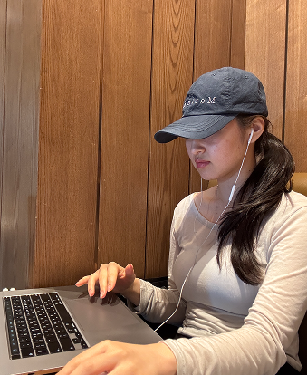
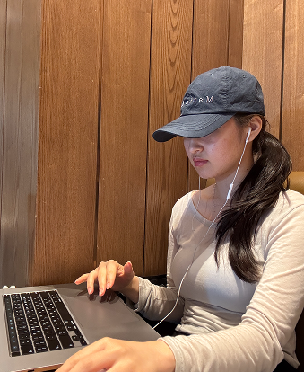

Brand Identity
(GRAPHIC)A Complete Brand Identity Design Project Including Logo, Color Palette, And Visual Guidelines.
DESINGER 
CRAFTED UX
BY FEEL
© 2025
Sooe ⋯ nice to meet you here.
I turn quiet ideas into real experiences
My work blends form and function
and make it real

각 키워드에 마우스를 올려보세요 ☺
Scroll

01
Working on
Portfolio
02
University Graduation Show
(A+ UX/UI)
[Rooted in curiosity]
Design wasn’t a choice for me—it came naturally.
My habit of observing and constantly asking, “Why is it
made this way?” led me to UX/UI design. I found more joy
in understanding the why than just creating something.
디자인은 제게 선택이 아닌, 자연스러운 흐름이었습니다.
무언가를 관찰하고 “왜 이렇게 만들었을까?”를 끊임없이
고민하는 성향은 저를 UX/UI 디자인으로 이끌었습니다.
만드는 것 자체보다, 그 이유를 탐구하는 과정이 흥미로웠습니다.

 


Soo yeon lee.zip
3 items
[Shaped by doing]
Even small projects taught me a lot through trial and error.
While juggling different jobs to make ends meet, I never gave up on design—and that perseverance
shaped me. Now, I strive to balance function, emotion, and user-centered thinking.
작은 프로젝트라도 직접 해내며 시행착오 속에서 저만의 기준을 쌓아왔습니다.
여러 일을 병행하면서도 디자인을 놓지 않았던 시간이 지금의 저를 만들었습니다.
지금은 실용성과 감성, 사용자 중심 사고 사이의 균형을 고민하며 설계합니다.
Soo yeon lee.zip
 02_learn.jpeg
02_learn.jpeg 03_design.jpe...
03_design.jpe...[Evolving Vision]
I want to design experiences that are not just beautiful,
but meaningful to both users and brands.
My goal is to grow as a designer who embraces challenges and solves problems with depth.
앞으로는 단순히 예쁜 디자인이 아닌,
사용자와 브랜드 모두에게 의미 있는 경험을 주는 디자인을 만들고 싶습니다.
도전 앞에서 멈추지 않고, 깊이 있는 문제 해결을 통해 성장하는 디자이너가 되고자 합니다.

Korea, Seoul qazxcvbnm322@naver.com
Aiming to design meaningful
experiences for users and brands.
안녕하세요. 만나뵙게 되어 반갑습니다.
시각디자인을 전공하고, UI/UX 디자인을 중심으로 활동해왔습니다.
약 1년간의 실무와 프리랜서 경험을 통해, 사용자 경험을 깊이 고민하는 습관을 길렀습니다.
초기에는 시각적 완성도에 집중했으나, 점차 문제 해결과 설계의 맥락에 관심을 갖게 되었습니다.
기획 단계부터 흐름을 고려해 기능과 형태의 균형을 맞추며, 설득력 있는 디자인을 지향합니다.
현재는 단순히 보기 좋은 화면보다, 사용자와 브랜드 모두에게 의미 있는 경험을 설계하고자 합니다.

EDUCATION
CERTIFICATE
2024 GTQ 1급 취득
SOFTWARE AND TECH
PRESENT
5월까지 디자인 관련 프리랜서를 했었고, 현재는 취업 준비로 쉬고있어요!
A Collection Of Works
(2021-2025)
A Complete Brand Identity Design Project Including Logo, Color Palette, And Visual Guidelines.
A Netflix Interface Clone Built With React And Modern CSS Techniques For Learning Purposes.
A Web Redesign Project That Reinterprets Aesop's Brand Mood With A Modern, Trend-Driven Approach.
A Web Redesign Project That Reinterprets Aesop's Brand Mood With A Modern, Trend-Driven Approach.
A Web Redesign Project That Reinterprets Aesop's Brand Mood With A Modern, Trend-Driven Approach.
A Web Redesign Project That Reinterprets Aesop's Brand Mood With A Modern, Trend-Driven Approach.